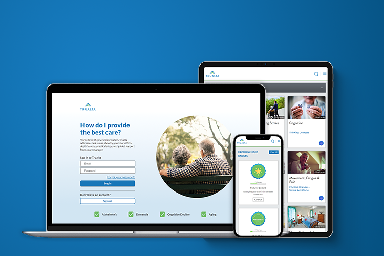
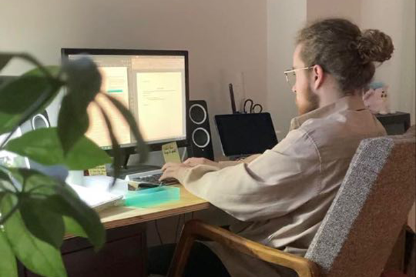

Trualta, Junior Designer
Trualta is an education healthcare startup which helps family caregivers provide care to their aging loved ones, typically with Alzheimer's and dementia. As the Junior Designer for Trualta, I've collaborated with all of the staff to keep branding on track, test and develop product opportunities, and organize content to be shared to client portals.
The details
- Goal: Empowering family caregivers to care without concern.
- Team:
- Jonathan Davis, Founder & CEO
- James Purdy, Product Design
- Pamela Tannouri, Care Solutions
- Audience: Area Agencies on Aging (AAAs) Case Managers, Family Caregivers
- Duration: June 2020 - Present
- Skills: Product Design, Graphic Design, Video Editing, Branding
The challenge
Trualta's online platform provides courses and resources to help develop and support family caregivers, while also broadening the reach of health agencies. One of the challenges of my projects is the consideration that has to be given to those who use our platform. Our end users (those being family caregivers) are our key consideration towards the development of content and our portals, however we also require the consideration of the case managers and partners who are covering the licenses for Trualta.
Key Users

Family Caregivers
Caregivers are those who are providing care to their aging loved ones.
Some of their core needs are:
- An effective platform to learn how to provide care for their loved one.
- Something that is easy to use, and easy to access.
Case Managers
Case Managers are those who organize caregivers, and help facilitate their learning journey.
Some of their core needs are:
- Data and tracking to understand how their caregivers are doing
- Allow caregiver independance, while also maintaining contact
Some of my progress

Throughout my time working at Trualta, I've been really excited to be part of a startup. Trualta has been in a really exciting place, with rapid growth on our horizon.
Prior to me joining Trualta, they had a strong base of content and client outreach, and was clear to see they had legs under them. From a design perpective, their platform looked intentional and professional, and served the needs of the user. What I was eager to grow was their overall design credibility, and expand on all of the great work they've done so far.
Many of my first projects were editing together video content, and outreach Graphic Design. Later, I worked more within Product Design, and creating improvements to the portal for caregivers, therefore maximizing benefit to the case managers.
My Solution
During my time working at Trualta, I've been able to make some really exciting things!
Customizable Marketing Kit
One of my key projects has been creating customizable marketing kits for partner agencies to effectively communicate the benefits Trualta can make in their lives. A big challenge of Trualta is that we can make the platform as wonderful and purposeful to the end user, but it is the case manager who needs to market our product for us for it to be successful. Chances are, they don't have too much of a design and marketing background, and that's where my expertise came in!
After searching through options online, I realized that it would be best if we could simply give case managers a library of marketing assets to
Product Design
2-Step Registration
Video
There's been quite a few video projects
Virtual Tradeshow
A different sort of challenge faced at Trualta through COVID-19 is that
What I learned
Working at Trualta gave me some strong insight to what I value into what I value most within a career. Knowing what I know now, an ideal career to me is one where I feel valued, when I feel my work is of value to both the organization and to a larger calling, and where there is a strong understanding of a healthy work – life balance. As some more background on the project, I worked this fully remote, but the quality of team made it feel like we weren't so far apart.